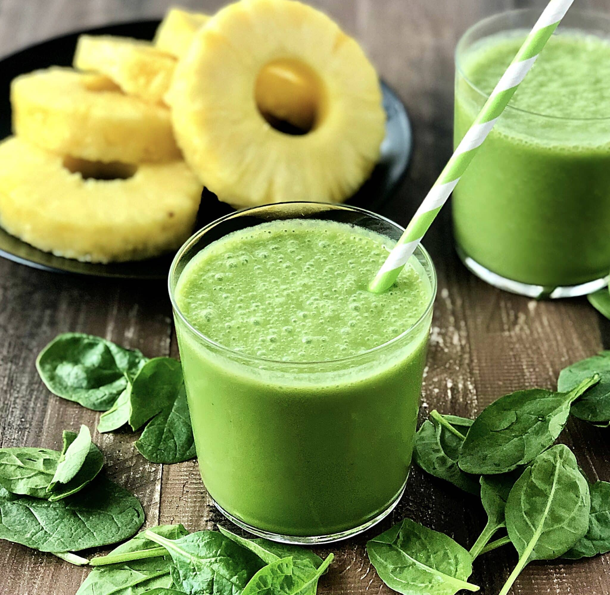

Ultimate Green Smoothie

Description
A green smoothie is a great snack or meal replacement that can pack a ton of vitamins into a fresh, bright package.
Green smoothies are generally made with some kind of iron rich leafy green paired with a tropical fruit, such as pineapple or mango.
This versatile recipe uses ratios of fruit, thickener, and liquid. At the end of the recipe are substitutions and variations
you can try out.
Ingredients
- 1 cup frozen pineapple chunks
- 1 cup frozen spinach
- 1 cup coconut water
- 1/2 cup pineapple juice
- 1/2 fresh kiwi
- 1/2 cup plain greek yogurt
- 1/2 cup silken tofu
- 1 tbsp maple syrup
Steps
- Combine frozen foods in blender closest to the blades. (Note: if you are use a single serving blender like a bullet
you will need to reverse this order.)
-
Add tofu and greek yogurt.
-
Add pineapple juice, coconut water, and maple syrup.
-
Blend thoroughly until smooth.